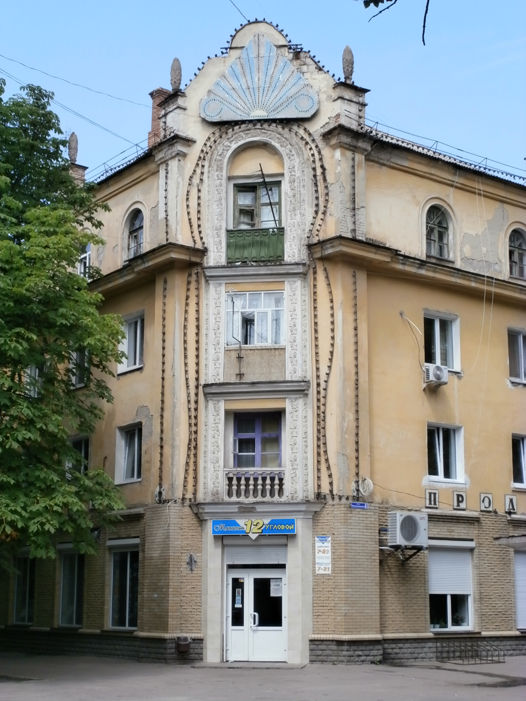
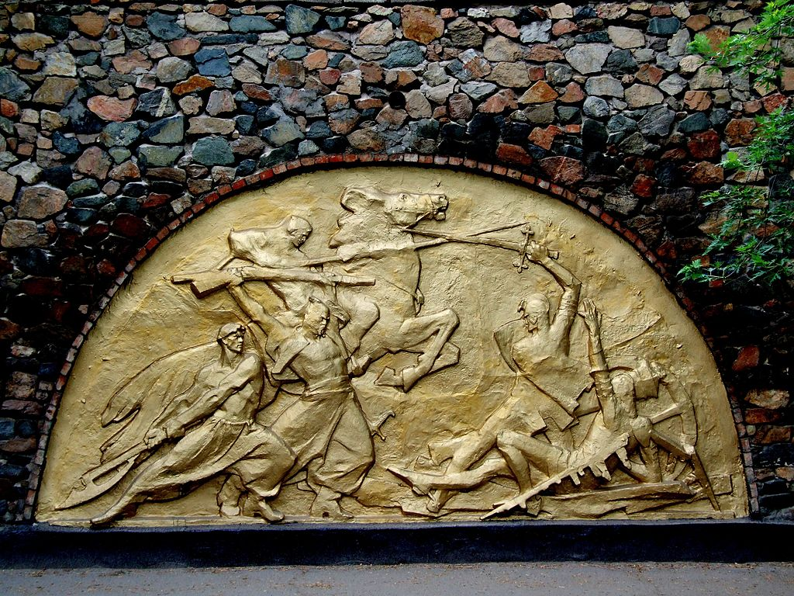
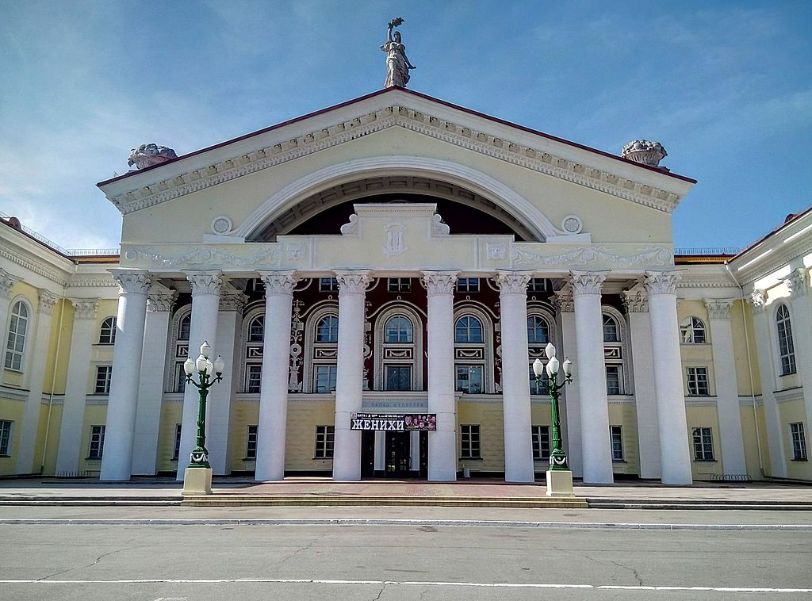

Жёлтые Во́ды
Жёлтые Во́ды(укр. Жовті Води; до 22 мая 1957 — Жёлтая Река, укр. Жовта Ріка) — город в Каменском районе Днепропетровской области Украины. До 17 июля 2020 года был городом областного подчинения и составлял Желтоводский городской совет, в который, кроме того, входило село Сухая Балка.
Находится на берегу реки Жёлтой, у границы с Кировоградской областью. Выше по течению на расстоянии в 0,5 км расположено село Миролюбовка, ниже по течению на расстоянии в 0,5 км расположено село Марьяновка. Через город проходит автомобильная дорога Т-0418. Расстояние до областного центра — города Днепра составляет 125 км, до Кропивницкого — 96 км.
Население по переписи 2001 года составляло 56 452 человека[4]. Украинцы составляли 80,14 % населения города, русские — 16,66 %[3]. Численность населения города (горсовет) на 1 января 2014 года составила 48 045 человека, в том числе город Жёлтые Воды — 47 284 человека, село Сухая Балка — 761 человек[5]. На 1 мая 2014 года — 47 880 человек, в том числе город Жёлтые Воды — 47 117 человек, село Сухая Балка — 763 человека[6]. На 1 ноября 2015 года — 49 406 постоянных жителей и 47 161 человек наличного населения[7]. На июль 2022 года около 31 тысячи постоянного населения[8]. Звёздочками обозначены данные переписей населения, без звёздочек — сведения Государственного комитета статистики Украины.

История города
Долину Жёлтой реки с её притоками, ивами, зарослями тростника в старину называли урочищем Жёлтые Воды. В некоторых местах река омывала выходы железной руды, а ярко-жёлтая краска — продукт окисления, окрашивала воду. Поэтому, запорожские казаки назвали реку Жёлтой, а долину возле неё — Жёлтыми Водами. Эта местность относилась к так называемому Дикому полю. Переправа на реке Жёлтой называлась Жёлтым Бродом. Здесь стояли казацкие зимовники, укреплённые для защиты от татар.

Внутреннее деление
Город Жёлтые Воды имеет прямоугольную планировку. Протяжённость города с севера на юг — 2,4 км, с запада на восток — 3,5 км (с пригородами 7,7 км с севера на юг и 5,3 км с запада на восток).
Фактически город делится на 3 части:
Улица Богдана Хмельницкого, 8
Восточная часть (Старый город) — самая старая часть города. Застроена в 1950—1960-х годах. Здесь расположены: дворец культуры, городской исторический музей, желтоводское педучилище, «Парк Славы», часть «Детского Парка», желтоводская исправительная колония, старые корпуса городской больницы. Считается наиболее депрессивным районом: много заброшенных домохозяйств, отсутствует базовая инфраструктура торговли и сферы услуг. Населена преимущественно пенсионерами.
Средняя часть — застроена в 1970—1980-е годы. Здесь находится условный центр города. В этой части расположены: здание городской администрации, ныне заброшенный институт предпринимательства «Стратегия», желтоводский промышленный техникум, украинский научно-исследовательский и проектно-изыскательский институт промышленной технологии, часть «Детского Парка».
Западная часть — застроена в 1980—2000-е годы. Является типичным спальным районом времён СССР. Наиболее благоприятный район Жёлтых Вод с хорошо развитой инфраструктурой. Здесь расположены: новые корпуса городской больницы, детская поликлиника, родильный дом, автостанция, городской суд, предприятия торговли и сферы услуг, сетевые продуктовые магазины.
Возле города есть такие зоны:
Промышленная зона — примыкает к городу с севера. В этой части расположены цеха ВостГОКа, различные частные предприятия, гаражные массивы и складские комплексы.
Пригородная зона — примыкает к городу с востока и состоит исключительно из частного сектора. Полузаброшена. По территории этой зоны протекает река Жёлтая.
